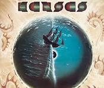

Six songs that never get old · Curated by Grant Chamberlain

What makes a song all-time worthy? Here's how I think about it:
All six songs on this list pass every test.
An interactive look at music streaming trends — explore the data below.
Check out my interactive web app — built with a little help from AI.